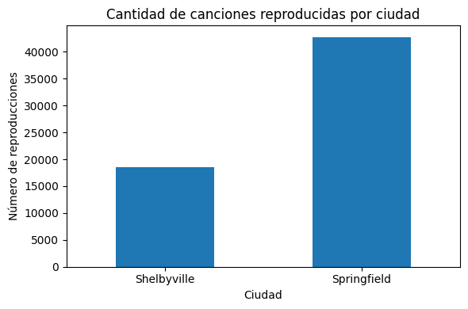
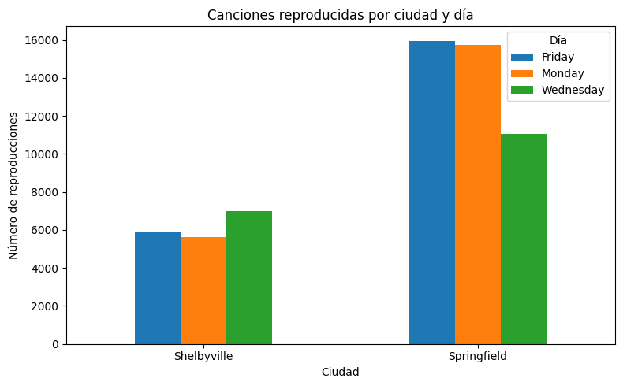

# Importa pandas
import pandas as pdHábitos de escucha de los usuarios
En este proyecto, trabajarás con datos reales de transmisión de música online para explorar y procesar información sobre los hábitos de escucha de los usuarios y las usuarias en dos ciudades: Springfield y Shelbyville.
Etapa 1. Descripción de los datos
# Lee el archivo y almacénalo en df
df = pd.read_csv('/content/music_project_en.csv')# 10 primeras filas de la tabla df
print(df.head(10)) userID Track artist genre \
0 FFB692EC Kamigata To Boots The Mass Missile rock
1 55204538 Delayed Because of Accident Andreas Rönnberg rock
2 20EC38 Funiculì funiculà Mario Lanza pop
3 A3DD03C9 Dragons in the Sunset Fire + Ice folk
4 E2DC1FAE Soul People Space Echo dance
5 842029A1 Chains Obladaet rusrap
6 4CB90AA5 True Roman Messer dance
7 F03E1C1F Feeling This Way Polina Griffith dance
8 8FA1D3BE L’estate Julia Dalia ruspop
9 E772D5C0 Pessimist NaN dance
City time Day
0 Shelbyville 20:28:33 Wednesday
1 Springfield 14:07:09 Friday
2 Shelbyville 20:58:07 Wednesday
3 Shelbyville 08:37:09 Monday
4 Springfield 08:34:34 Monday
5 Shelbyville 13:09:41 Friday
6 Springfield 13:00:07 Wednesday
7 Springfield 20:47:49 Wednesday
8 Springfield 09:17:40 Friday
9 Shelbyville 21:20:49 Wednesday # Información general sobre nuestros datos
df.info()<class 'pandas.core.frame.DataFrame'>
RangeIndex: 65079 entries, 0 to 65078
Data columns (total 7 columns):
# Column Non-Null Count Dtype
--- ------ -------------- -----
0 userID 65079 non-null object
1 Track 63736 non-null object
2 artist 57512 non-null object
3 genre 63881 non-null object
4 City 65079 non-null object
5 time 65079 non-null object
6 Day 65079 non-null object
dtypes: object(7)
memory usage: 3.5+ MBSegún el método info, las columas en su totalidad tienen datos de tipo object en sus filas. Podemos reconocerlo por el método info así como la propieda dtypes
Con el método info podemos ver las cabeceras y con ello ver los espacios que presentan algunas de ellas así como que no hay homogeneidad en el capital letter de ellas.
En el head, el campo id tiene menos registros que los demás, pero con el método info veo que en las columnas Track, artist y genre hay valores nulos.
Etapa 2. Preprocesamiento de los datos
Estilo del encabezado
# Muestra los nombres de las columnas
print(df.columns)Index([' userID', 'Track', 'artist', 'genre', ' City ', 'time', 'Day'], dtype='object')Vamos cambiar los encabezados de la tabla siguiendo las reglas estilísticas convencionales: * Todos los caracteres deben ser minúsculas. * Elimina los espacios. * Si el nombre tiene varias palabras, utiliza snake_case, es decir, añade un guion bajo ( _ ) entre las palabras en lugar de un espacio.
# Bucle que itera sobre los encabezados y los pone todos en minúsculas
new_columns = []
for column in df.columns :
new_columns.append(column.lower())
df.columns = new_columns# Bucle que itera sobre los encabezados y elimina los espacios
new_columns = []
for column in df.columns :
new_columns.append(column.strip())
df.columns = new_columns# Cambia el nombre de la columna "userid"
new_columns = []
for column in df.columns :
new_columns.append(column.replace('userid', 'user_id'))
df.columns = new_columns# Comprueba el resultado: lista de encabezados
print(df.columns)Index(['user_id', 'track', 'artist', 'genre', 'city', 'time', 'day'], dtype='object')Valores ausentes
# Calcula el número de valores ausentes
print(df.isna().sum())user_id 0
track 1343
artist 7567
genre 1198
city 0
time 0
day 0
dtype: int64# Bucle en los encabezados reemplazando los valores ausentes con 'unknown'
columns_to_replace = ['track', 'artist' , 'genre']
for column in columns_to_replace:
df[column].fillna('unknown', inplace=True)/tmp/ipykernel_4954/1734251734.py:4: FutureWarning: A value is trying to be set on a copy of a DataFrame or Series through chained assignment using an inplace method.
The behavior will change in pandas 3.0. This inplace method will never work because the intermediate object on which we are setting values always behaves as a copy.
For example, when doing 'df[col].method(value, inplace=True)', try using 'df.method({col: value}, inplace=True)' or df[col] = df[col].method(value) instead, to perform the operation inplace on the original object.
df[column].fillna('unknown', inplace=True)# Cuenta los valores ausentes
print(df.isna().sum())user_id 0
track 0
artist 0
genre 0
city 0
time 0
day 0
dtype: int64Duplicados
# Cuenta los duplicados explícitos
print(df.duplicated().sum())3826# Elimina los duplicados explícitos
df.drop_duplicates(inplace=True)
# Comprueba de nuevo si hay duplicados
print(df.duplicated().sum())0Ahora queremos deshacernos de los duplicados implícitos en la columna genre. Por ejemplo, el nombre de un género se puede escribir de varias formas. Dichos errores también pueden afectar al resultado.
# Inspecciona los nombres de géneros únicos
df_genre = df['genre']
df_uniques_genres = df_genre.unique()
print(sorted(df_uniques_genres))['acid', 'acoustic', 'action', 'adult', 'africa', 'afrikaans', 'alternative', 'ambient', 'americana', 'animated', 'anime', 'arabesk', 'arabic', 'arena', 'argentinetango', 'art', 'audiobook', 'avantgarde', 'axé', 'baile', 'balkan', 'beats', 'bigroom', 'black', 'bluegrass', 'blues', 'bollywood', 'bossa', 'brazilian', 'breakbeat', 'breaks', 'broadway', 'cantautori', 'cantopop', 'canzone', 'caribbean', 'caucasian', 'celtic', 'chamber', 'children', 'chill', 'chinese', 'choral', 'christian', 'christmas', 'classical', 'classicmetal', 'club', 'colombian', 'comedy', 'conjazz', 'contemporary', 'country', 'cuban', 'dance', 'dancehall', 'dancepop', 'dark', 'death', 'deep', 'deutschrock', 'deutschspr', 'dirty', 'disco', 'dnb', 'documentary', 'downbeat', 'downtempo', 'drum', 'dub', 'dubstep', 'eastern', 'easy', 'electronic', 'electropop', 'emo', 'entehno', 'epicmetal', 'estrada', 'ethnic', 'eurofolk', 'european', 'experimental', 'extrememetal', 'fado', 'film', 'fitness', 'flamenco', 'folk', 'folklore', 'folkmetal', 'folkrock', 'folktronica', 'forró', 'frankreich', 'französisch', 'french', 'funk', 'future', 'gangsta', 'garage', 'german', 'ghazal', 'gitarre', 'glitch', 'gospel', 'gothic', 'grime', 'grunge', 'gypsy', 'handsup', "hard'n'heavy", 'hardcore', 'hardstyle', 'hardtechno', 'hip', 'hip-hop', 'hiphop', 'historisch', 'holiday', 'hop', 'horror', 'house', 'idm', 'independent', 'indian', 'indie', 'indipop', 'industrial', 'inspirational', 'instrumental', 'international', 'irish', 'jam', 'japanese', 'jazz', 'jewish', 'jpop', 'jungle', 'k-pop', 'karadeniz', 'karaoke', 'kayokyoku', 'korean', 'laiko', 'latin', 'latino', 'leftfield', 'local', 'lounge', 'loungeelectronic', 'lovers', 'malaysian', 'mandopop', 'marschmusik', 'meditative', 'mediterranean', 'melodic', 'metal', 'metalcore', 'mexican', 'middle', 'minimal', 'miscellaneous', 'modern', 'mood', 'mpb', 'muslim', 'native', 'neoklassik', 'neue', 'new', 'newage', 'newwave', 'nu', 'nujazz', 'numetal', 'oceania', 'old', 'opera', 'orchestral', 'other', 'piano', 'pop', 'popelectronic', 'popeurodance', 'post', 'posthardcore', 'postrock', 'power', 'progmetal', 'progressive', 'psychedelic', 'punjabi', 'punk', 'quebecois', 'ragga', 'ram', 'rancheras', 'rap', 'rave', 'reggae', 'reggaeton', 'regional', 'relax', 'religious', 'retro', 'rhythm', 'rnb', 'rnr', 'rock', 'rockabilly', 'romance', 'roots', 'ruspop', 'rusrap', 'rusrock', 'salsa', 'samba', 'schlager', 'self', 'sertanejo', 'shoegazing', 'showtunes', 'singer', 'ska', 'slow', 'smooth', 'soul', 'soulful', 'sound', 'soundtrack', 'southern', 'specialty', 'speech', 'spiritual', 'sport', 'stonerrock', 'surf', 'swing', 'synthpop', 'sängerportrait', 'tango', 'tanzorchester', 'taraftar', 'tech', 'techno', 'thrash', 'top', 'traditional', 'tradjazz', 'trance', 'tribal', 'trip', 'triphop', 'tropical', 'türk', 'türkçe', 'unknown', 'urban', 'uzbek', 'variété', 'vi', 'videogame', 'vocal', 'western', 'world', 'worldbeat', 'ïîï']# Función para reemplazar los duplicados implícitos
def replace_wrong_values(df, column, wrong_values, correct_value):
for wrong_value in wrong_values:
df[column] = df[column].replace(wrong_value, correct_value)
# Elimina los duplicados implícitos
wrong_values = ['hip', 'hop', 'hip-hop']
replace_wrong_values(df, 'genre', wrong_values, 'hiphop')# Comprueba de nuevo los duplicados implícitos
print(sorted(df['genre'].unique()))['acid', 'acoustic', 'action', 'adult', 'africa', 'afrikaans', 'alternative', 'ambient', 'americana', 'animated', 'anime', 'arabesk', 'arabic', 'arena', 'argentinetango', 'art', 'audiobook', 'avantgarde', 'axé', 'baile', 'balkan', 'beats', 'bigroom', 'black', 'bluegrass', 'blues', 'bollywood', 'bossa', 'brazilian', 'breakbeat', 'breaks', 'broadway', 'cantautori', 'cantopop', 'canzone', 'caribbean', 'caucasian', 'celtic', 'chamber', 'children', 'chill', 'chinese', 'choral', 'christian', 'christmas', 'classical', 'classicmetal', 'club', 'colombian', 'comedy', 'conjazz', 'contemporary', 'country', 'cuban', 'dance', 'dancehall', 'dancepop', 'dark', 'death', 'deep', 'deutschrock', 'deutschspr', 'dirty', 'disco', 'dnb', 'documentary', 'downbeat', 'downtempo', 'drum', 'dub', 'dubstep', 'eastern', 'easy', 'electronic', 'electropop', 'emo', 'entehno', 'epicmetal', 'estrada', 'ethnic', 'eurofolk', 'european', 'experimental', 'extrememetal', 'fado', 'film', 'fitness', 'flamenco', 'folk', 'folklore', 'folkmetal', 'folkrock', 'folktronica', 'forró', 'frankreich', 'französisch', 'french', 'funk', 'future', 'gangsta', 'garage', 'german', 'ghazal', 'gitarre', 'glitch', 'gospel', 'gothic', 'grime', 'grunge', 'gypsy', 'handsup', "hard'n'heavy", 'hardcore', 'hardstyle', 'hardtechno', 'hiphop', 'historisch', 'holiday', 'horror', 'house', 'idm', 'independent', 'indian', 'indie', 'indipop', 'industrial', 'inspirational', 'instrumental', 'international', 'irish', 'jam', 'japanese', 'jazz', 'jewish', 'jpop', 'jungle', 'k-pop', 'karadeniz', 'karaoke', 'kayokyoku', 'korean', 'laiko', 'latin', 'latino', 'leftfield', 'local', 'lounge', 'loungeelectronic', 'lovers', 'malaysian', 'mandopop', 'marschmusik', 'meditative', 'mediterranean', 'melodic', 'metal', 'metalcore', 'mexican', 'middle', 'minimal', 'miscellaneous', 'modern', 'mood', 'mpb', 'muslim', 'native', 'neoklassik', 'neue', 'new', 'newage', 'newwave', 'nu', 'nujazz', 'numetal', 'oceania', 'old', 'opera', 'orchestral', 'other', 'piano', 'pop', 'popelectronic', 'popeurodance', 'post', 'posthardcore', 'postrock', 'power', 'progmetal', 'progressive', 'psychedelic', 'punjabi', 'punk', 'quebecois', 'ragga', 'ram', 'rancheras', 'rap', 'rave', 'reggae', 'reggaeton', 'regional', 'relax', 'religious', 'retro', 'rhythm', 'rnb', 'rnr', 'rock', 'rockabilly', 'romance', 'roots', 'ruspop', 'rusrap', 'rusrock', 'salsa', 'samba', 'schlager', 'self', 'sertanejo', 'shoegazing', 'showtunes', 'singer', 'ska', 'slow', 'smooth', 'soul', 'soulful', 'sound', 'soundtrack', 'southern', 'specialty', 'speech', 'spiritual', 'sport', 'stonerrock', 'surf', 'swing', 'synthpop', 'sängerportrait', 'tango', 'tanzorchester', 'taraftar', 'tech', 'techno', 'thrash', 'top', 'traditional', 'tradjazz', 'trance', 'tribal', 'trip', 'triphop', 'tropical', 'türk', 'türkçe', 'unknown', 'urban', 'uzbek', 'variété', 'vi', 'videogame', 'vocal', 'western', 'world', 'worldbeat', 'ïîï']import matplotlib.pyplot as plt
# Cantidad de canciones reproducidas por ciudad
tracks_por_ciudad = df.groupby('city')['track'].count()
# Gráfico
plt.figure(figsize=(6,4))
tracks_por_ciudad.plot(kind='bar')
plt.title('Cantidad de canciones reproducidas por ciudad')
plt.xlabel('Ciudad')
plt.ylabel('Número de reproducciones')
plt.xticks(rotation=0)
plt.tight_layout()
plt.show()
Etapa 3. Análisis
Queremos analizar si hay diferencias en la cantidad de canciones reproducidas en Springfield y Shelbyville. Para ello, usaremos los datos de dos días de la semana: lunes y viernes.
Compararemos cuántas canciones se escucharon en cada ciudad durante esos días para identificar posibles patrones de comportamiento.
# Cuenta las canciones reproducidas en cada ciudad
print(df.groupby('city')['track'].count())city
Shelbyville 18512
Springfield 42741
Name: track, dtype: int64El número de tracks reproducidas en SpringField es mayor al número de tracks reproducidos en Shelbyville.
# Calcula las canciones reproducidas en cada uno de los dos días
print(df.groupby('day')['track'].count())day
Friday 21840
Monday 21354
Wednesday 18059
Name: track, dtype: int64Sería interesante saber si en cada ciudad estos datos son diferentes o es algo general que en todas las ciudades ocurre lo del día. Se me hace interesante como esto puede llevarse a otro nivel viendo las diferencias culturales en cuanto a como podría variar en referencia a los días.
def number_tracks(day, city):
return df.query("day == @day & city == @city")['user_id'].count()
# El número de canciones reproducidas en Springfield el lunes
number_tracks('Monday', 'Springfield')np.int64(15740)# El número de canciones reproducidas en Shelbyville el lunes
number_tracks('Monday', 'Shelbyville')np.int64(5614)# El número de canciones reproducidas en Springfield el viernes
number_tracks('Friday', 'Springfield')np.int64(15945)# El número de canciones reproducidas en Shelbyville el viernes
number_tracks('Friday', 'Shelbyville')np.int64(5895)# Canciones por ciudad y día
city_day = df.groupby(['city', 'day'])['track'].count().unstack()
# Gráfico
city_day.plot(kind='bar', figsize=(8,5))
plt.title('Canciones reproducidas por ciudad y día')
plt.xlabel('Ciudad')
plt.ylabel('Número de reproducciones')
plt.xticks(rotation=0)
plt.legend(title='Día')
plt.tight_layout()
plt.show()
Conclusiones
En base a los datos finales encontrados podemos observar que en SpringField se suele escuchar más música que en Shelvyville y que por otro lado las personas suelen escuchar música de preferencia los viernes antes que los lunes. Es interesante ver que considerando en días como el miércoles, la cantidad de canciones es mucho menor por lo que sería interesante compararlo con otros datos para ver la razón de este comportamiento.
En cuánto a los problemas encontrados, inicialmente fue el tema de limpieza de datos y datos nulos que existían en el archivo y fue bueno recordar algunos métodos como el fillna en conjunto con la estructura for para poder dar solución a ello. De igual manera el uso del método sorted para poder ordenar los datos y facilitar las cosas para el filtrado.
Por otra parte, los datos sí desmuestran un cambio en cuanto a las ciudades ya que este comportamiento es normal ya que el aspecto cultural puede modificar la manera en la que las personas se distraen. Sin embargo, algo curioso es que aún así en cuanto a los días, vemos un patrón que también llama la atención. Sería bueno ver si ese patrón se extiende más allá de las ciudades evaluadas y se repite a nivel del país o del continente.